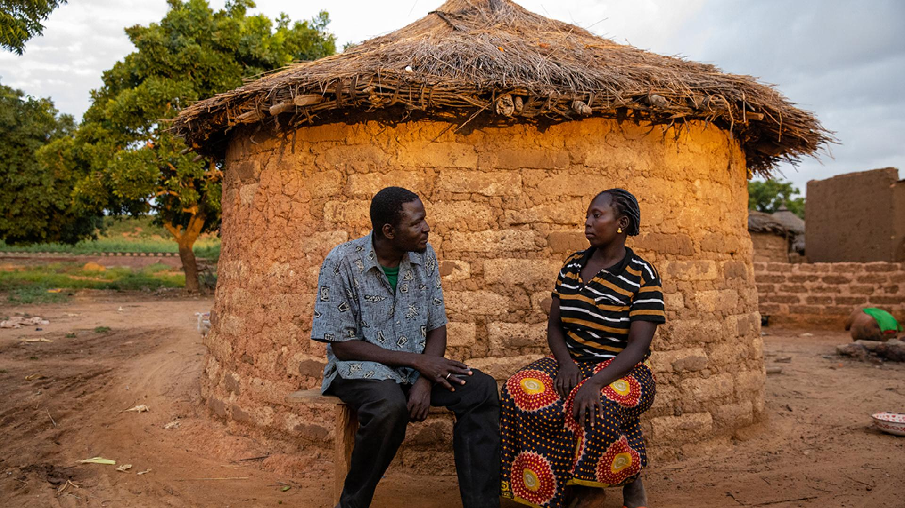
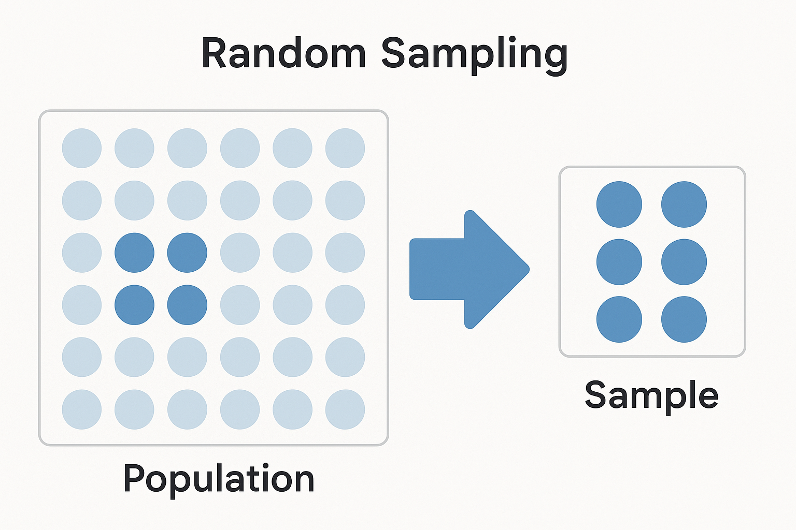
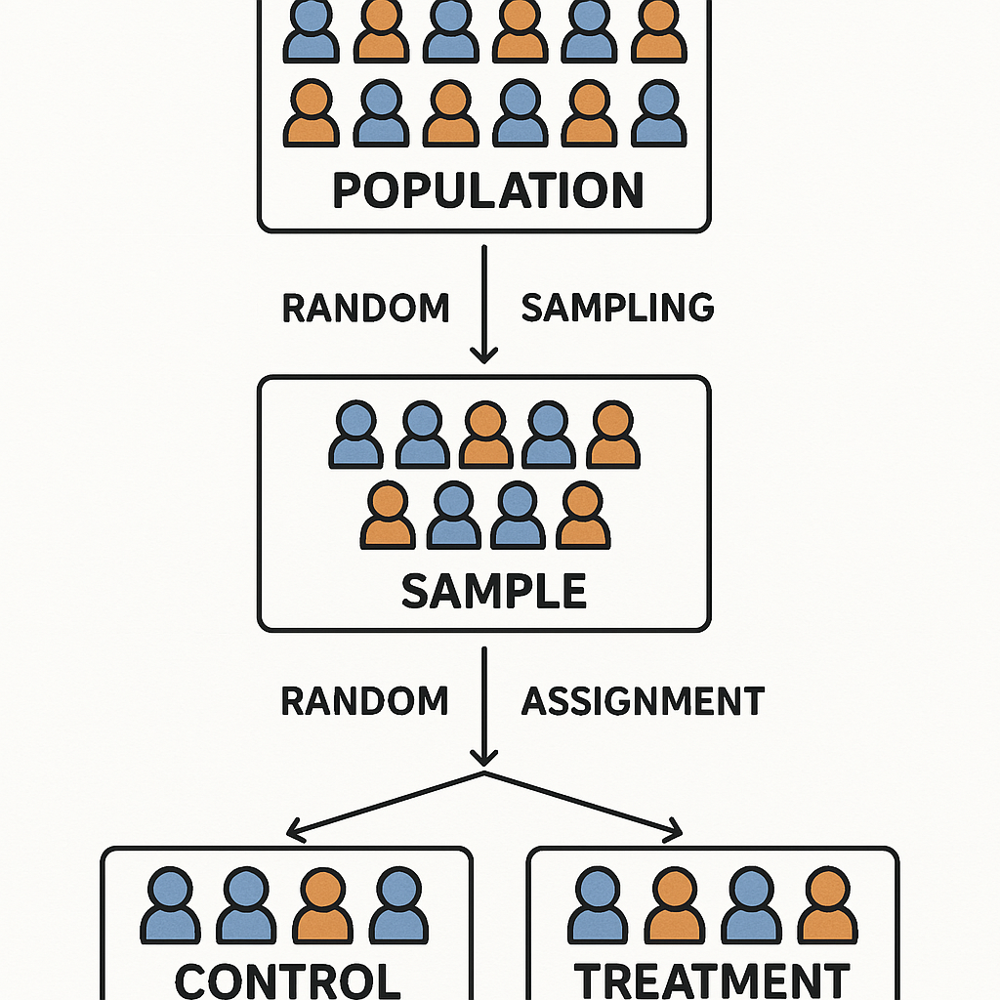

Randomization
Introduction to randomization in impact evaluations, covering theoretical foundations and practical implementation strategies for researchers.

- Randomization creates comparable treatment and control groups by ensuring each unit has an equal chance of assignment
- Unit of randomization (individual vs. cluster) affects statistical power, spillovers, and implementation feasibility
- Different randomization methods address specific evaluation contexts and program constraints
What is Randomization?
Randomization is the cornerstone of rigorous impact evaluation. This process assigns units – individuals, households, schools, and other entities – to treatment and control groups, ensuring that assignment relies purely on chance rather than systematic factors.
For a practical introductory guide to randomization, see Guide to Randomization.
Random Sampling vs. Random Assignment
It is crucial to distinguish between two related but distinct concepts:
The process of selecting a subset of units from a larger population where each unit has a known probability of being selected. This ensures the sample is representative of the population.

The process of allocating sampled units to treatment and control groups using a random mechanism. This ensures groups are comparable on both observable and unobservable characteristics.

Geographic or systematic assignment – such as “northern half gets treatment, southern half gets control” – is not random assignment, even if the sample was selected through random sampling.
Basic Randomization Procedures
Complete Randomization: Fixed Proportion
This method assigns a predetermined number of units to treatment and control groups. For example, if you have 1000 participants and want exactly 400 in treatment:
- You would randomly order all 1000 participants
- Assign the first 400 to treatment
- Assign the remaining 600 to control
This ensures precise control over group sizes, which proves important when:
- Limited treatment resources exist, such as only 400 program slots
- Balanced groups are needed for statistical power
- Implementation requires exact numbers, such as classroom capacity
Unlike randomization with fixed probability, this method guarantees your desired treatment/control ratio.
- Compile a list of all subjects in your sample
- Determine the number you want in treatment (and control)
- Use a random number generator to order observations randomly
- Assign the first N units to treatment, remainder to control
Advantages:
- Ensures exact group sizes
- Simple to implement and explain
- Equitable when resources are limited
Challenge: Requires a complete list of participants upfront
Simple Randomization: Fixed Probability
Each unit has a fixed probability, for example 50%, of assignment to treatment, regardless of other units’ assignments. This resembles flipping a coin for each participant:
- Heads: 50% probability, assigned to treatment
- Tails: 50% probability, assigned to control
For example:
- A student program might assign each applicant to treatment with 40% probability
- A health intervention might use 30% probability for intensive treatment
- A pilot study might start with 20% in treatment to test implementation
Unlike fixed proportion, the final group sizes may vary due to chance, but the law of large numbers means they’ll approach the target ratio with larger samples.
- Walk-in situations where you can’t create a list in advance
- Rolling enrollment contexts
- When exact group sizes aren’t critical
Important Note: This method may result in unequal group sizes due to chance
Choosing the Unit of Randomization
The level at which you randomize is one of the most critical decisions in evaluation design.
Individual-Level Randomization
Individual-level treatment assignment means each participant has an independent probability of selection for treatment or control. This offers maximal statistical power since each individual is an independent observation.
For example, in a microfinance study, individual entrepreneurs might be randomly selected to receive business loans, while others serve as controls.
Appropriate when:
- Treatment delivery to individuals independently
- Minimal risk of spillovers between individuals
- Maximum statistical power requirements
Examples:
- Patient-level medical interventions
- Individual tutoring programs
- Personal financial incentives
Cluster-Level Randomization
Cluster randomization assigns entire groups, such as schools, villages, or health clinics, to treatment or control conditions. Instead of randomizing individual participants, all units within a cluster receive the same treatment status.
For example, in a teacher training program, entire schools might be randomized rather than individual teachers. This means:
- If School A is assigned to treatment, all teachers in School A receive training
- If School B is assigned to control, no teachers in School B receive training
Necessary when:
- Treatment affects entire groups, such as teacher training affecting whole classrooms
- High risk of spillovers within clusters
- Implementation constraints require treating entire groups
Common clusters:
- Schools for education interventions
- Villages for community programs
- Health clinics for health system interventions
Statistical implications:
- Reduced statistical power due to fewer independent units
- Need to account for intra-cluster correlation
- Typically requires larger sample sizes
Benefits:
- Minimizes spillovers within natural groups
- Often more practical to implement
- Can capture group-level effects
Key Considerations for Choosing Randomization Level
Decision Framework
When choosing your randomization level, consider these key factors:
Individual-Level Randomization
Best when:
- Outcomes measured at individual level—test scores, health metrics, income
- Intervention targets individuals—personal tutoring, cash transfers
- Low spillover risk from personal interventions with minimal interaction
- Maximum statistical power needed
- Simple interventions with good tracking systems
Cluster-Level Randomization
Best when:
- Outcomes measured at group level—school performance, village outcomes
- Intervention targets groups—teacher training, community programs
- High spillover potential from social programs and shared resources
- Coordination with group leaders required
- Willing to accept lower statistical power for practical benefits
Managing Common Challenges
Noncompliance
Noncompliance occurs when units don’t follow their assigned treatment status. This can happen in two ways:
- One-Sided Noncompliance: Only treatment group members can deviate
- Treatment group members do not participate, know as “no-shows”, “dropouts”, or “refusers”
- Control group cannot access treatment
- Two-Sided Noncompliance: Both groups can deviate
- Treatment group members do not participate
- Control group members receive treatment, known as “crossover”
Common causes:
- Service providers struggle to distinguish groups
- Logistical challenges in differential treatment
- Participant self-selection or refusal
- Control group finding alternative ways to access treatment
Solutions:
- Randomize at provider level when possible
- Clear marking/identification systems
- Strong monitoring protocols
- Document all cases of noncompliance
- Use intention-to-treat (ITT) analysis
- Consider instrumental variables for treatment-on-treated effects
Analysis Approaches:
- Intention-to-Treat (ITT): Analyze by original assignment
- Treatment-on-Treated (TOT): Account for actual treatment received
- Local Average Treatment Effect (LATE): For partial compliance
Spillovers
Spillovers occur when the treatment affects units beyond those directly treated, potentially contaminating the control group and biasing treatment estimates.
Types of spillovers:
- Environmental: Treatment changes shared conditions,such as reduced disease transmission
- Behavioral: Control group imitates treatment behaviors
- Informational: Knowledge spreads between groups
Strategies:
- Increase geographic/social distance between groups
- Randomize at higher level to contain spillovers
- Design evaluation to measure spillovers explicitly
Impact on Analysis:
- Can lead to underestimated treatment effects if control group benefits
- May require additional buffer zones between treatment and control
- Sometimes spillovers themselves are of research interest, such as vaccine studies
Alternative Randomization Methods
Purpose: Test multiple treatment variations simultaneously and efficiently
Design Types:
- 2x2 factorial design (most common)
- Multiple treatment arms (3+ variations)
- Nested designs
Advantages:
- Tests interaction effects between treatments
- More cost-effective than separate trials
- Identifies optimal treatment combinations
Implementation:
- List all treatment combinations
- Assign units randomly to each arm
- Track and monitor each variation separately
- Analyze both main effects and interactions
Teacher Training and Materials Example
| Group | Training | Materials | Sample Size |
|---|---|---|---|
| Control | No | No | 25% |
| T1 | Yes | No | 25% |
| T2 | No | Yes | 25% |
| T3 | Yes | Yes | 25% |
Purpose: Ensure all units eventually receive treatment while maintaining a valid control group
Design Types:
- Sequential rollout (most common)
- Random order phase-in
- Stratified phase-in
- Time-lagged treatments
Advantages:
- Ethically sound (all units get treatment)
- Maintains experimental control
- Allows program refinement
- Multiple measurement points
Implementation:
- Determine number and timing of phases
- Randomize order of treatment receipt
- Monitor phase transitions carefully
- Analyze data from each phase
Community Program Rollout Example
| Phase | Treatment Group | Control Group | Timeline |
|---|---|---|---|
| 1 | 25% | 75% | Months 1-3 |
| 2 | 50% | 50% | Months 4-6 |
| 3 | 75% | 25% | Months 7-9 |
| 4 | 100% | 0% | Months 10-12 |
Purpose: Evaluate impact when treatment cannot be denied but participation can be influenced
Design Types:
- Information campaigns
- Personalized reminders
- Application assistance
- Cost subsidies
- Behavioral nudges
Advantages:
- Ethical when services are entitlements
- Maintains experimental validity
- Measures both take-up and impact
- Identifies barriers to participation
Implementation:
- Design effective encouragement strategy
- Randomize who receives encouragement
- Track both encouragement and participation
- Use instrumental variables analysis
Health Insurance Program Example
| Group | Encouragement | Access | Expected Take-up |
|---|---|---|---|
| Treatment | Active outreach | Yes | 60% |
| Control | No outreach | Yes | 30% |
| Difference | Information + reminders | None | 30% |
Purpose: Ensure balance on key characteristics across treatment groups, especially important with small samples or critical covariates
Design Types:
- Geographic stratification
- Demographic characteristics
- Baseline performance levels
- Multiple variable combinations
- Covariate-adaptive methods
Advantages:
- Improves statistical precision
- Guarantees balance on key variables
- Reduces chance of unlucky draws
- Facilitates subgroup analysis
- Increases credibility of results
Implementation:
- Select key stratification variables
- Create strata combinations
- Randomize within each stratum
- Verify balance across strata
Education Program Example
| Stratum | Baseline Score | Gender | Treatment Share |
|---|---|---|---|
| Low-Male | Below median | Male | 50% |
| Low-Female | Below median | Female | 50% |
| High-Male | Above median | Male | 50% |
| High-Female | Above median | Female | 50% |
The Balsakhi program in India is a classic example of rigorous randomization in education research (Banerjee et al., 2007; Duflo, Glennerster, and Kremer, 2007):
Context:
Implemented by Pratham, the Balsakhi program provided remedial tutoring to academically weaker primary school students in Mumbai and Vadodara. The goal was to help students who were falling behind catch up with their peers.
Randomization:
- Unit: 122 schools were randomized to either receive the Balsakhi intervention or serve as controls.
- Stratification: Randomization was stratified by language of instruction (Marathi, Gujarati, Hindi, English) and by gender composition (boys’, girls’, and co-ed schools) to ensure balance across key characteristics.
Implementation:
- Within treatment schools, Balsakhis (local young women trained as tutors) worked with the lowest-performing students, identified using baseline test scores.
- Strict protocols were followed to prevent contamination between treatment and control schools, including separate training and monitoring teams.
- Detailed documentation and monitoring ensured fidelity to the randomization plan.
Results:
- The program led to a significant improvement of 0.14 standard deviations in test scores for all students, and even larger gains for the weakest students.
- The study demonstrated the power of cluster-level randomization and the importance of stratification for balance.
References:
- Banerjee, A., Cole, S., Duflo, E., and Linden, L. (2007). “Remedying Education: Evidence from Two Randomized Experiments in India.” Quarterly Journal of Economics, 122(3), 1235-1264. DOI: 10.1162/qjec.122.3.1235 1
- Duflo, E., Glennerster, R., and Kremer, M. (2007). “Using Randomization in Development Economics Research: A Toolkit.” Handbook of Development Economics, 4, 3895-3962. 2
Footnotes
Banerjee, A., Cole, S., Duflo, E., and Linden, L. (2007). Remedying education: Evidence from two randomized experiments in India. The Quarterly Journal of Economics, 122(3), 1235-1264. https://doi.org/10.1162/qjec.122.3.1235↩︎
Duflo, E., Glennerster, R., and Kremer, M. (2007). Using randomization in development economics research: A toolkit. In T. P. Schultz and J. A. Strauss (Eds.), Handbook of Development Economics (Vol. 4, pp. 3895-3962). Elsevier.↩︎